Flashcards de Teorias da Aprendizagem
Clique em um card para ver os conceitos chave da teoria.
TEORIAS COMPORTAMENTALISTAS ANTIGAS
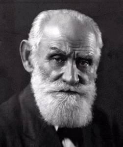
Pavlov
Rússia, 1849-1936
- Condicionamento clássico
- Aprendizagem de sinal
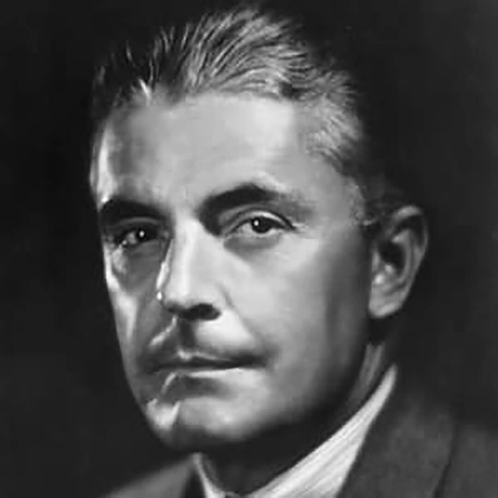
Watson
EUA, 1878-1958
- Behaviorismo
- Cadeia de reflexos
- Frequência e recenticidade
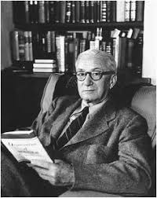
Guthrie
EUA, 1886-1959
- Associação por contiguidade
- Hábito
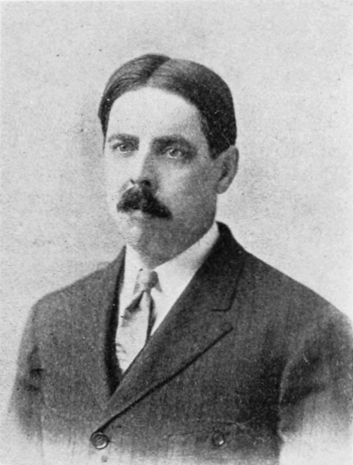
Thorndike
EUA, 1874-1949
- Estímulo-resposta
- Lei do efeito (reforço)
- Conexionismo
NEOBEHAVIORISMO / TRANSIÇÃO COMPORTAMENTALISMO-COGNITIVISMO
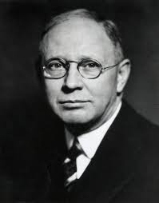
Hull
EUA, 1884-1952
- Estímulo-organismo-resposta
- Teoria do impulso-redução
- (Necessidade biológica-homeostase)
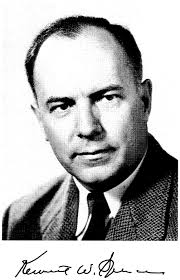
Spence
EUA, 1907-1967
- Continuador de Hull
- Variáveis motivacionais
- (Incentivo, expectativa)
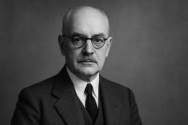
Tolman
EUA, 1886-1959
- Behaviorismo intencional
- Behaviorismo cognitivo
- Variável interveniente (cognição)
- Mapas cognitivos
TEORIAS COMPORTAMENTALISTAS
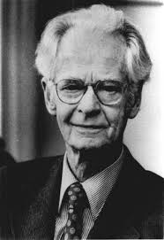
Skinner
EUA, 1904-1990
- Resposta-reforço
- Behaviorismo radical
- Condicionamento operante
- Instrução Programada (1954)
Keller
EUA, 1899-1996
- Continuador de Skinner
- Sistema de Instrução Personalizada
- (PSI, 1963-68)
TEORIAS COGNITIVISTAS ANTIGAS
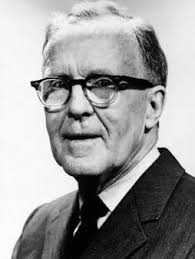
Hebb
Canadá, 1904-1985
- Modelo neuropsicológico
- Aglomerados de células
- Plasticidade
- Regra de Hebb
TEORIAS COGNITIVISTAS
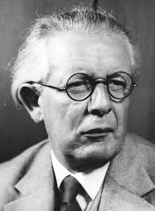
Piaget
Suíça, 1896-1980
- Períodos do desenvolvimento
- Epistemologia genética
- Assimilação, acomodação, equilibração
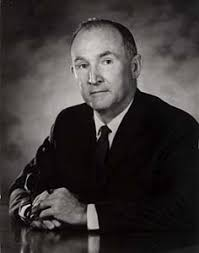
Kelly
EUA, 1905-1967
- Psicologia dos construtos sociais
- Homem-cientista
- Alternativismo construtivo
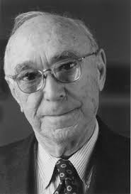
Bruner
EUA, 1915-2016
- Representação (ativa, icônica, simbólica)
- Currículo em espiral
- Aprendizagem por descoberta
- "Revolução cognitiva” (1956)
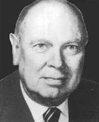
Gagné
EUA, 1916-2002
- Processamento de informações
- Teoria da instrução
- Hierarquias de aprendizagem
Ausubel
EUA, 1918-2008
- Aprendizagem significativa
- Subsunçores
- Diferenciação progressiva
- Mapas conceituais
TEORIAS COGNITIVISTAS HUMANISTAS
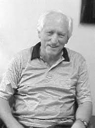
Gowin
EUA, 1921-2008
- Modelo de ensino-aprendizagem
- Congruência de significados
- Aprendizagem baseada em conhecimento
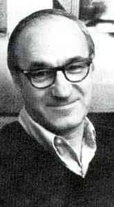
Bandura
EUA, 1925-2021
- Aprendizagem social
- Autoeficácia
Novak
EUA, 1932-2023
- Teoria de educação
- Aprendizagem significativa
- Mapas conceituais
- Aprender a aprender

Hanesian
?-?
- Colaboradora de Ausubel e Novak